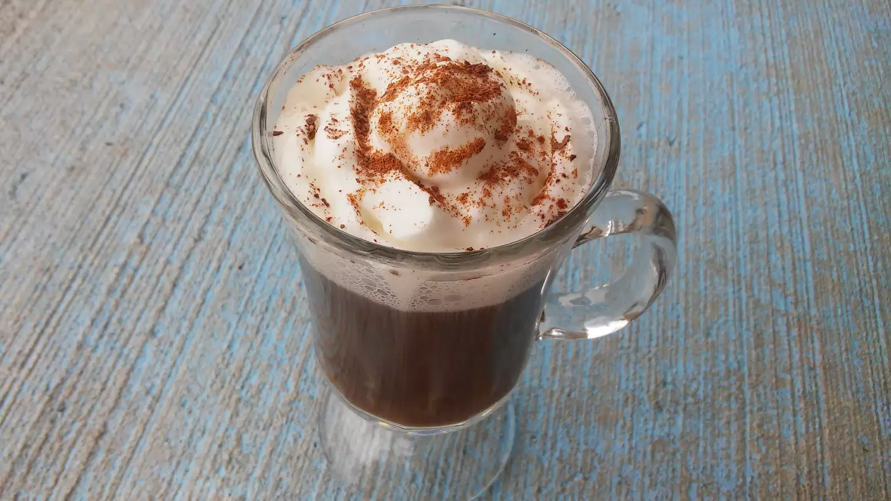

Mexican style coffee

Mixing warm coffee with tequila and coffee liqueur makes for a perfect 'apres ski.'
Ingredients
- 4 fluid ounces hot brewed coffee
- 1 fluid ounce coffee liqueur
- 1 fluid ounce tequila
- 1 tablespoon whipped topping
- 1 pinch ground cinnamon, for garnish
- 1 pinch cocoa powder, for garnish
Steps
- Pour the coffee into a mug. Stir in the coffee liqueur
and tequila. Garnish with whipped topping, cinnamon, and cocoa powder.